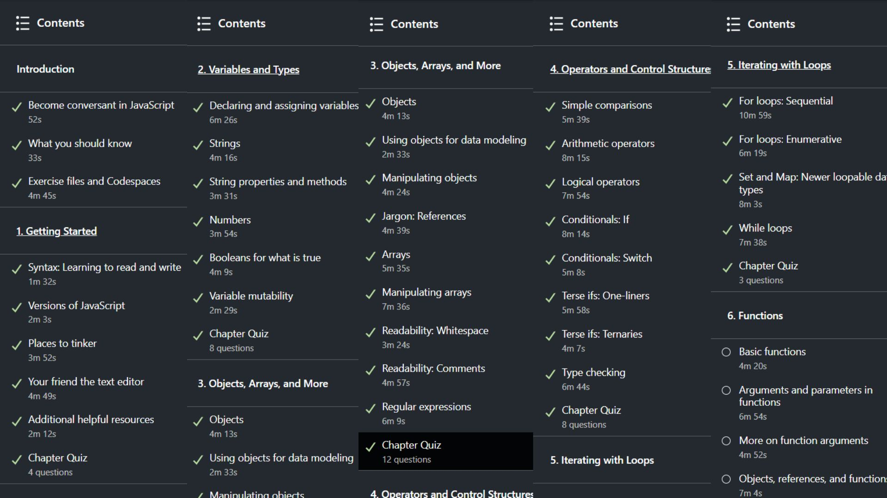

Web Dev Blog
Intro
to
HTML

Week 1
- I understood the role of a web developer better
- I learnt the structure of html doccuments and also how to use simple elements
- I made my own recipe card on replit here
Week 2
- I learnt semantic elements such as header, article, section, nav etc.
- I learnt how to code CSS to make my site look better by using styles, fonts and colours
- I started coding html on visual studio code and created this blog
Week 3
- I learnt how to create a simple form using form, input tags and write simple validations
- I learnt selectors, positioning, media queries and flexboxes
Week 4
- I learnt how to make images responsive so it resizes based on the screen size using flexboxes
- I learnt how to create a repository on github and commit changes using vscode to github
- I also learnt how to use simple markdowns
Week 5
- I learnt how to access linkedin learning to take online courses (see below)
- From a linkedin course, I learnt the basics of javascript

Week 6
- I learnt that template literals are closed by backticks
- I learnt how to make conditions and loops in javascript
- I learnt create a function
Week 7
- I learnt how to handle errors gracefully
- I learnt how to make a form and validate inputs
- I learnt what a local storage is and how to access it
Week 8
- I learnt how to fetch APIs use AJAX
- I learnt to use postman
Week 9
- I learnt how to use bootstrap to build responsive sites easily
- I was introduced to chartjs
Week 12
- I learnt how to use RestDB and created my first database
- I learnt how to use HTTP methods
Week 13
- I learnt how to make better commit comments
- I did a quiz
Week 14
- I learnt what a lottie is
- I learnt how to use a lottie animation in my site